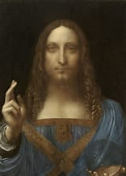
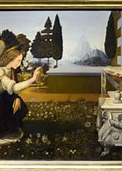

Similar works of Leonardo da Vinci

The Baptism of Christ

Salvator Mundi

Author

The Mona Lisa bears a notable resemblance to Renaissance depictions of the Virgin Mary, reflecting the era's ideals of womanhood. Leonardo da Vinci depicted the sitter in a pozzetto armchair with her arms folded, a reserved posture complemented by her gaze fixed on the observer. Leonardo's use of sfumato, blending edges softly, imbues her expression with ambiguity, particularly around the mouth and eyes. The three-quarter profile and loggia backdrop connect the work to Flemish and Italian portraiture traditions. Behind her, an imaginary landscape with icy mountains, winding paths, and a distant bridge enhances the painting's enigmatic mood. Notably, Leonardo's placement of the horizon at eye level links the figure to the expansive setting, emphasizing her mysterious nature.
The Mona Lisa was among the first Italian portraits to depict a sitter before a landscape, blending realism and imagination. The absence of visible eyebrows or eyelashes, once described by Vasari, has been attributed to overcleaning, as revealed by high-resolution scans. These scans also uncovered earlier layers showing reworked features and details like a headdress later overpainted. While some argue the background reflects Chinese artistic influences, others see parallels with Italian landscapes, including Montefeltro and Lake Como. The sitter's subdued beauty and the elusive quality of her smile—visible only in peripheral vision—continue to captivate, adding to the mystique of this masterpiece.